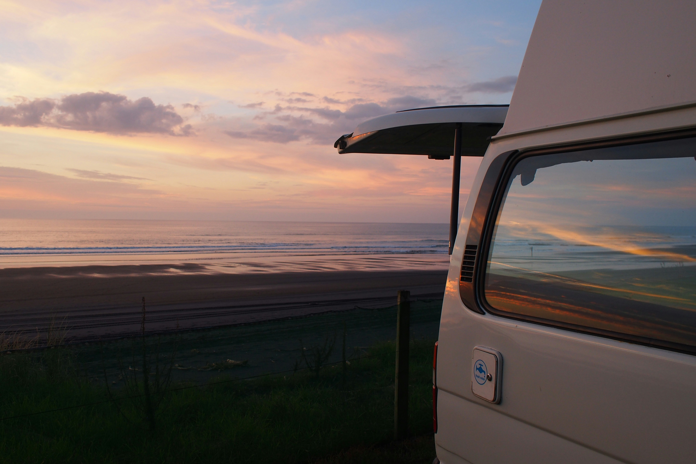
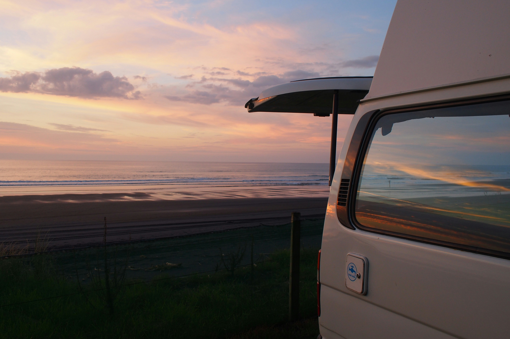

Hi, ich bin Lea Marie, 26 Jahre alt und ausgebildete Fotografin. Schon als Kind habe ich meine Liebe zur Fotografie entdeckt, als ich die alte Kamera meines Vaters ausprobiert habe. Diese Leidenschaft hat mich nie losgelassen, und nach der Schule habe ich eine Ausbildung zur Fotografin gemacht. Heute arbeite ich freiberuflich und habe mich auf Porträts spezialisiert. Es begeistert mich, echte, ungestellte Momente einzufangen und Menschen so darzustellen, wie sie wirklich sind. Meine Kamera ist mein ständiger Begleiter, egal ob auf Reisen oder im Alltag. Am liebsten fotografiere ich draußen, wo das natürliche Licht meinen Bildern eine besondere Atmosphäre verleiht.
Neben der Fotografie liebe ich es, neue Orte zu entdecken und mich von unterschiedlichen Kulturen und Landschaften inspirieren zu lassen. Jede Reise bringt neue Geschichten und Begegnungen, die ich mit meiner Kamera festhalte. Ich bin ständig auf der Suche nach neuen Perspektiven und einzigartigen Motiven. Außerdem arbeite ich eng mit meinen Kunden zusammen, um ihre Visionen und Wünsche in meinen Bildern zum Leben zu erwecken. Kreativität und Empathie stehen bei meiner Arbeit an erster Stelle.
 

-
Ich komme ursprünglich aus Dresden, einer Stadt, die mich mit ihrer beeindruckenden Architektur und Geschichte schon früh inspiriert hat. Dort habe ich auch meine Ausbildung zur Fotografin gemacht und meine ersten beruflichen Schritte unternommen. Vor fünf Jahren bin ich nach Berlin gezogen, um neue kreative Möglichkeiten zu entdecken und mein Netzwerk auszubauen. Die Stadt bietet unglaublich viele spannende Motive, vor allem durch ihre Vielfalt und Energie. Hier habe ich die Freiheit, meiner Kreativität freien Lauf zu lassen und mich ständig weiterzuentwickeln. Berlin ist für mich ein Ort, an dem ich mich persönlich und beruflich entfalten kann.
-
Ich würde mich selbst als echten Familienmenschen beschreiben. Meine Familie bedeutet mir alles, und obwohl ich in Berlin lebe, versuche ich, so oft es geht, Zeit mit ihnen zu verbringen. Auch meine Freunde aus der Kindheit spielen eine wichtige Rolle in meinem Leben. Viele von ihnen kenne ich schon seit meiner Schulzeit in Dresden, und trotz der Entfernung halten wir engen Kontakt. Diese Verbindungen geben mir viel Kraft und Inspiration, sowohl im Alltag als auch in meiner kreativen Arbeit. Ich liebe es, Zeit mit meinen Liebsten zu verbringen, ob bei gemütlichen Abenden oder gemeinsamen Ausflügen. Für mich ist es wichtig, solche Beziehungen zu pflegen und immer wieder Raum für gemeinsame Erinnerungen zu schaffen.
-
Während meiner Ausbildung zur Fotografin hatte ich die Möglichkeit, bei einer renommierten Modemarke zu arbeiten. Dort habe ich viel über die speziellen Anforderungen der Modefotografie gelernt, von der Inszenierung der Kleidung bis hin zur Arbeit mit Models und Stylisten. Besonders spannend war es, hinter die Kulissen von Fotoshootings zu schauen und den gesamten kreativen Prozess zu erleben, von der Konzeptentwicklung bis zur finalen Bildauswahl. Diese Erfahrung hat mir gezeigt, wie wichtig es ist, jedes Detail im Blick zu haben, um die Markenästhetik perfekt einzufangen. Ich durfte auch bei Kampagnen mitwirken, was mir wertvolle Einblicke in die Arbeit im Team und den Druck, der oft bei kommerziellen Shootings herrscht, gegeben hat. Diese Zeit hat meine Fähigkeiten stark geprägt und mir den Einstieg in die professionelle Fotografie erleichtert.
-
In meiner Freizeit verbringe ich gerne Zeit mit Pferden. Reiten ist für mich der perfekte Ausgleich zu meiner Arbeit, denn es gibt mir die Möglichkeit, komplett abzuschalten und die Natur zu genießen. Pferde faszinieren mich schon seit meiner Kindheit, und wann immer ich die Chance habe, verbringe ich Zeit im Stall oder unternehme Ausritte. Ein weiteres Hobby, das mir viel bedeutet, ist das Reisen mit meinem Van. Ich liebe es, spontan neue Orte zu entdecken und dabei die Freiheit zu genießen, immer dort anzuhalten, wo es mir gefällt. Diese Kombination aus Abenteuer und Natur inspiriert mich auch oft in meiner Fotografie. Mein Van ist für mich nicht nur ein Transportmittel, sondern ein kleines Zuhause auf Rädern, das mir das Gefühl von Freiheit und Unabhängigkeit gibt.